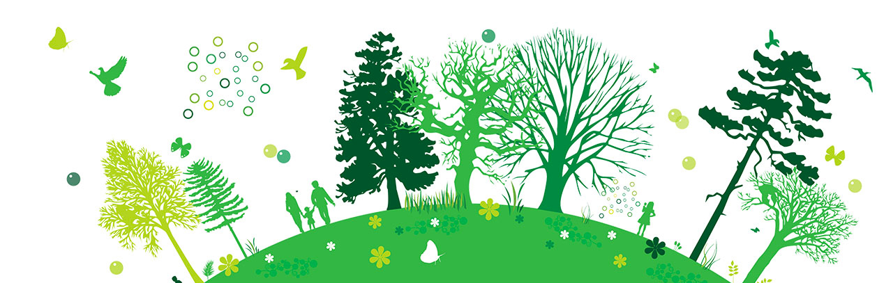

Méthodologie
Rappel de la problématique
L’idée est de comparer la COP 21 et la COP 22 par une analyse de la blogosphère et des plates-formes sur lesquelles sont collectés les articles de blogs. Ainsi, comment s’est organisée la blogosphère pour ces deux COP et quels en sont les thèmes et acteurs importants ?
Nous avons choisi de collecter nos données sur deux plates-formes, Radarly et Spinn3r. Radarly nous permettra de comparer la COP 21 et la COP 22 pour en saisir les enjeux, les thèmes, les acteurs et leur organisation, tandis que Spinn3r nous servira à questionner la manière d’obtenir les données de blogs sur la COP 22 en comparant ses résultats à ceux de Radarly.
La cartographie des blogs nous permettra de comprendre s’il y a des communautés de bloggeurs, d’influenceurs qui émergent, afin d’en repérer des acteurs importants et/ou étonnamment marginaux.


Notre protocole d'enquète
Outils et opérations à réaliser
Une première étape consistera à définir les thèmes et acteurs importants avec CortextManager. Notre hypothèse est qu’il y aurait d’une part des communautés langagières, et d’autre part des thématiques fortes, voire clivantes, structurant les articles parlant de la COP 21 et de la COP 22. Nous chercherons à comprendre si la différenciation par langue permet de distinguer des sujets et des problématiques propres à chaque langue.
Une fois effectuée, la première étape nous servira de base pour constituer une cartographie de la blogosphère à partir de Hyphe, en fonction des liens hypertextes qui mesurent l’autorité. Hyphe permet de mettre en valeur un réseau des acteurs, et d’identifier des clusters, représentant des communautés d’intérêt. Ici, nous faisons l’hypothèse que les liens hypertextes permettent de dessiner un réseau de collaboration et d’oppositions des blogueurs.
Dans un troisième temps, une analyse des cartographies devrait nous permettre de repérer les thèmes et les acteurs associés à chaque COP.
Enfin, il s’agira de comparer la politique de collecte des données de Radarly et de Spinn3r pour émettre un regard critique sur la collecte de données et son usage. Nous nous demandons si les deux plates-formes ont des politiques de collecte similaires, et si oui jusqu’à quel(s) point(s).